- Overview
- How the plugin works
- Scopes
- Requirements
- Restrictions
- Recommendations
- Secure Connections through TLS
- Installation and Configuration
- Outlook Configuration
- Install the plugin in ProcessMaker
- Install the Add-In for Outlook
- Reinstalling the Outlook Add-In
- Setup the Add-In for Outlook
- Interaction with Cases Lists
- Running Cases - Cases Menu
- Session Lost
Version: 3.2.0 | Release Notes
Warning: The Microsoft Outlook Connector plugin and the Outlook Add-In are deprecated because Office 365 replaces Outlook. Furthermore, Microsoft Office 365 no longer supports Internet Explorer 11. Therefore, ProcessMaker no longer supports Internet Explorer 11.
Overview
ProcessMaker InOutlook is a plugin created to allow standard ProcessMaker users to use ProcessMaker from within a Microsoft Outlook email client (versions 2013 and 2016) and through the standard browser interface.
How the plugin works
Outlook adds an extra folder labeled ProcessMaker inside Outlook. By clicking on its icon, it shows all user cases sorted into folders, based on the status of each case. This allows working and managing cases just as if the user was logged directly into the ProcessMaker workspace.
Dynaforms are available to the user via the current browser, for the user to interact with them as usual.
Scopes
This plugin allows users to perform only the following tasks from within the Outlook interface:
- Start a New Case.
- Review and attend to existing Cases in the Inbox.
- Save Drafts.
- Review Participated, Paused, and Unassigned Cases.
- All tasks are performed in the same way that they are performed through the web browser. Designers and Administrators should still enter via a web browser to perform their respective tasks.
- Cases Menu with the following options Steps, Information, Actions, Cases Notes.
- The execution of any rules set in the conditions editor
Requirements
- This version plugin is compatible with ProcessMaker Enterprise version 3.3.2 or higher with a proper license.
Supported Stacks
- This version plugin is compatible with PHP5.6.X or PHP 7.1.X.
- See this documentation to view the server configurations which are supported.
Browser Requirements
- See this documentation to view the browsers which are supported.
Restrictions
Please take into consideration the following restrictions:
- The Outlook Add-In is not compatible with Office365 because the Outlook Web Access (OWA) for Office365 has a different management in an Add-In.
- The Outlook Connector plugin does NOT support LDAP users.
Recommendations
- If using Outlook Connector v 2.0.6, please uninstall and reinstall the Add-In to see new added features.
- The Outlook Connector plugin must be updated in the server.
- Clear the ProcessMaker cache server right after installing the new version in the server.
- Even if you have more than one language installed on your server, the Outlook connector plugin will only display English at the moment of configuring the server data.
Secure Connections through TLS
As a security best practice, ProcessMaker recommends configuring only TLS 1.1 and superior for the Web Server API request, which can be set in Apache/NGINX as follows:
- For Apache, in the pmos.conf file, add the following line:
SSLProtocol all -SSLv3 -TLSv1 - For NGINX, in the processmaker.conf file, add the following line:
ssl_protocols TLSv1.1 TLSv1.2;
Installation and Configuration
For extra information check this documentation in the Manually set up Internet email.
Outlook Configuration
For this plugin to work properly, follow the next steps:
The Outlook account setup MUST be configured manually. This means that when adding a new Outlook account, the "Manually configure server settings or additional server types" option MUST be selected. If this mandatory manual configuration is not selected, the Add-In will not work.
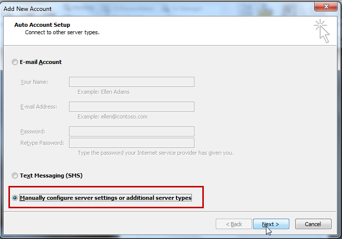
Click Next.
The Internet E-mail Settings screen displays, select the option to connect to a POP or IMAP email account serverThis configuration depends on the supported email server configuration for POP and IMAP. See this documentation to view how to configure some of the most used email servers.
After completing the configuration click More Settings to access the advanced configuration.
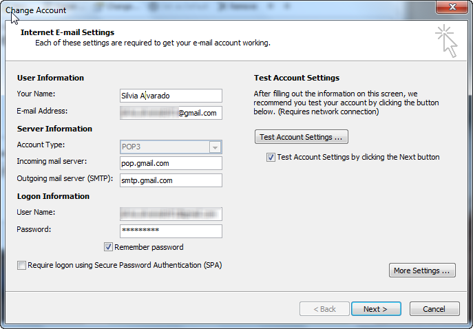
Note: It’s very important to make sure that the email server has POP and IMAP support. These options must be enabled so external programs such as Outlook can upload and download messages.
Inside the Internet Email Settings screen, choose the Outgoing Server tab and set it as the picture below:
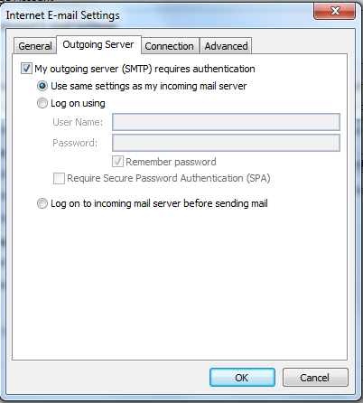
Go to the Advanced tab and set it as shown below:

Click OK to close the window.
Click on Test Account Settings... to test the new configuration.
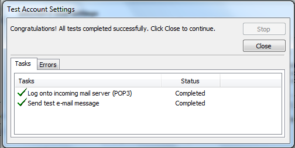
After all tests are complete, the account is configured. Click Close to exit.
Click Finish to exit the wizard.

Install the plugin in ProcessMaker
The plugin will be available once the Enterprise Edition plugin with the corresponding license is imported. It's necessary to activate this plugin once it's installed, it does not need additional configuration on the server side, follow these steps:
- Open ProcessMaker and go to Admin > Plugins > Enterprise Manager.
- Install and enable the plugin N_InOutlook.


Install the Add-In for Outlook
Supported versions with the Enterprise plugin:
- Outlook Add-In for Outlook 2013
- Outlook Add-In for Outlook 2016
Note: The installers are available only to clients or partners who have the license and are not using the trial version of ProcessMaker.
Please download the ProcessMaker Add-In for Outlook.
Follow these steps to install the Outlook Add-In:
- Close the Outlook application if it is open.
- Run the Add-In installer "setup.exe" which will check if .NET Framework is installed on the system, if .NET Framework is not installed, the following window displays:
- Click Yes to redirect you to the .NET Framework download page, download the 3.5 version and install the .NET framework.
- Once the .NET Framework is installed and running, the setup will display the following installer window.
- Click Next and select a folder where the Outlook plugin will be installed.
- Confirm the installation and click Next.
- Wait until the installation is finished and once the installation is complete, click Close to exit.
After the add-In is installed, open Outlook. A new tab labeled "Add-Ins" displays.
The Add-In tab displays two options:The ProcessMaker logo displaying the version of the Add-In.
The Configuration option.
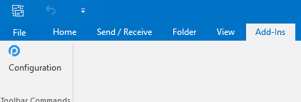
- Click the Configuration option. Enter the following information into the Configuration screen:
- IP address for the ProcessMaker server where you enabled the N_InOutlook plugin.
- ProcessMaker's credentials.
- ProcessMaker's workspace name.
ProcessMaker's skin.
Click Save. A new tab displays on the Outlook’s menu on the left side where ProcessMaker options display, including New Case, Inbox, Draft and others.

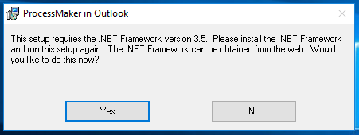
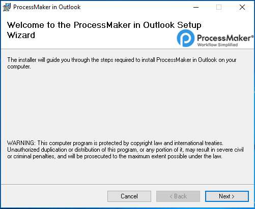
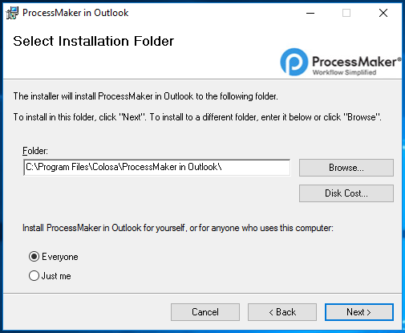
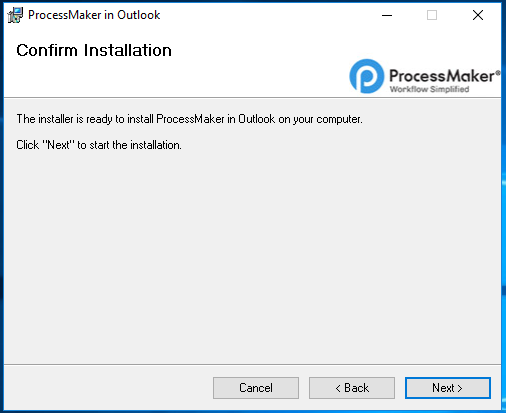

Reinstalling the Outlook Add-In
When updating the Outlook plugin to version to 2.0.6 or greater, it is necessary to uninstall the current Outlook Add-In and reinstall it to the last version one. To do this, follow the steps below:
Close Outlook.
Uninstall the Outlook previously installed, so Open Programs and Features by clicking the Start button, clicking Control Panel, clicking Programs, and then clicking Programs and Features, then look for the ProcessMaker in Outlook add-in and click Uninstall:

- Install the new version of Outlook Add-In.
Open your Microsoft Outlook, the Add-In must be included inside the Add-In tab:
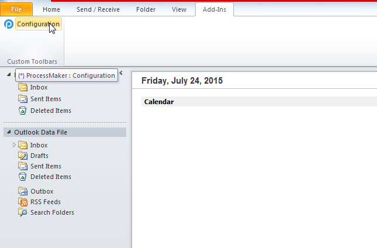
Setup the Add-In for Outlook
After installing the Add-In, do the following:
Open Outlook and click Configuration.
A window appears to configure the data server and the user account to use it.
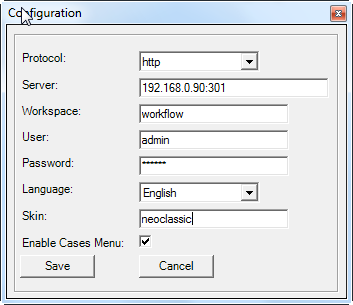
Where:
- Protocol: Choose between
httporhttps. - Server: Specify the name of the server.
- Workspace: Specify the name of the workspace.
- User: Enter the name of the user.
- Password: Enter the password of the user.
- Language: Choose between
SpanishorEnglish. - Enable Cases Menu: Check this option if you want to see the Case Menu when a case is being executed.
- Protocol: Choose between
When the Save button is pressed, it connects to the server to validate the user. If the validation was successful, the configuration window disappears and the system is ready to use.
Interaction with Cases Lists
It is possible to interact with cases (lists, steps, etc) in the same way as from the web application, but in a simpler and faster way, because the Add-In for Outlook records user information the first time and subsequently, it is useful to be used by the system without being authenticated every time.
By clicking on the ProcessMaker folder, all the folders from the ProcessMaker workspace display:

Notice that the Folder Inbox shows the number of new cases that are pending review assigned to the current user.
All of the characteristics (forms, input documents, output documents, triggers, derivations, etc.) are fully functional from Outlook.
Due to performance, the number of cases in the Participated and Unassigned folders do not show unlike the Inbox and Draft folders which are displayed between parenthesis.
ProcessMaker
This folder contains essential information about the Outlook Connector Plugin:

New Case
One of the main characteristics of this plugin is the possibility to start cases inside the Outlook application. By clicking on this option, all cases in which the user configured on the Outlook Settings participates are listed. (Don't forget that this user must be assigned to the initial task in order to start the case)

Inbox
All incoming cases will be stored in this folder as the following image displays:

Double click on the name of the case to open it.
Draft
Includes cases that are being edited or advanced by the user but have not yet been submitted to the next task, check the following image:

Double click on the name of the case to open it
Participated
Includes all the cases that the user has been sent or participated in, check the following image:

Unassigned
Includes all cases which are claimed by a pool of users assigned to the task, check the following image:

Paused
Includes a list of all cases which were paused during their execution. This gives users a quick view of their cases status since it is not possible to pause and unpause cases from the Outlook interface. Cases must be unpaused by going to ProcessMaker Interface.

Running Cases - Cases Menu
When running a case, the Case Menu with the four options found when running cases in ProcessMaker, you will find them at the top of the Menu like the one shown in the illustration below.
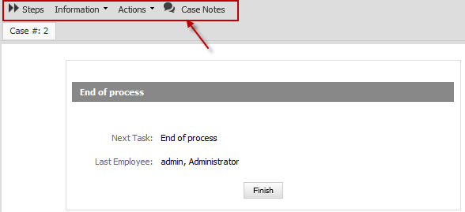
This functionality can be configured when ProcessMaker server is configured inside the Outlook, it means that the user can decide if whether the Cases Menu will display it or not. This is practically the same as the one you will find in ProcessMaker. Next you will find a brief explanation of each one of these options:
Steps
It shows all the Dynaforms, Output and Input Documents assigned in the current task, so they can be accessed easily. For more information about this, check Cases documentation.
Information
It shows all the information of the current process, if you click the down arrow you will find the following options:

- Process Map: Click on the Process Map option and a new tab opens next to the current case, showing the Process Map of the current process which is being executed.
- Process Information: Click on the Process Information option and a new window with the information of the current process will display.
- Task Information: Click on Task Information and a new window with the information of the current task displays.
- Case History: Click Case History and a brief description of the cases displays.
- Messages History: Click Messages History and it shows all the email notifications sent during the process.
- Dynaforms: Click Dynaforms to display all the dynaforms defined in the process. Users must have Process Permissions to see the list of dynaforms.
- Uploaded Documents: Click Uploaded Documents to show all the allowed documents uploaded by any input document defined during the process.
- Generated Documents: Click Generated Documents to show all the allowed documents generated by any output document defined during the process.
Actions
Users can execute the following actions:
- Pause: The current case in execution can be paused. By clicking on the calendar icon, a calendar will display in which the date of the unpaused case must be defined.
- Delete: It deletes the current case, ONLY if the user has the correct permissions to delete it.
- Cancel: It cancels a case.
- Reassign: A selected case from the list can be reassigned, it means that the owner of a case will change. If a different user different to admin needs to reassign a case, then assign this user a role with the PM_REASSIGNCASE
Case Notes
Case Notes are used to add comments and observations about cases, which can be read by anyone who has rights to open the case.
Session Lost
In the case when OutLook lost the session a message will display.

In order to recover the session the user only needs to open any folder and OutLook will reload the connection.